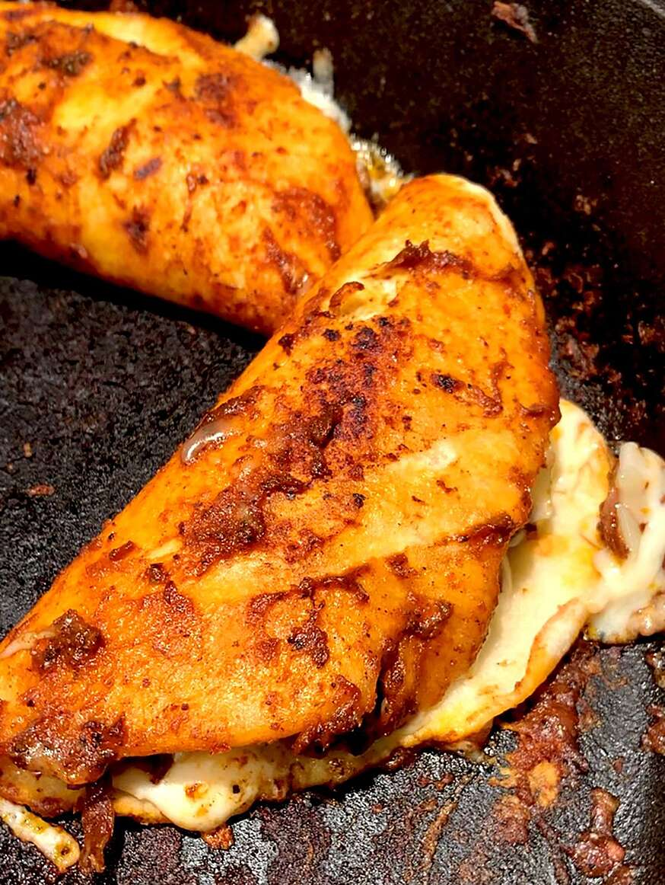

QUESA TACOS🤤

Description
Quesa tacos, if you haven't heard of them yet all over social media and the internet, is traditionally an addictive sweet, sour, slightly spicy, and utterly savory Mexican beef stew that's slow cooked until the beef is tender and fall-apart juicy and delicious.
Ingredients
- 2 teaspoons sesame seeds
- 2 teaspoons ground cumin
- 1 teaspoon whole black peppercorns
- 1 teaspoon coriander seeds
- ½ (1 inch) piece cinnamon stick
- 2 whole cloves
- 3 bay leaves
- 2 cups beef broth
- 2 tablespoons vegetable oil, divided
- 4 peppers guajillo chile peppers
- 2 small ancho chile pepper
- 1 chile de arbol chile peppers
- 1 large white onion
- 7 cloves garlic, minced
- 2 pounds goat stew meat, cut into 1-inch cubes
- ¼ cup distilled white vinegar
- 2 teaspoons salt
- 2 teaspoons dried Mexican oregano
- ¼ teaspoon ground thyme
- 1 (14 ounce) can diced tomatoes
- 16 (6 inch) flour tortillas
- 1 cup grated Cheddar cheese
- 1 lime, cut into wedges
- 1 tablespoon chopped fresh cilantro, or to taste
Steps
-
Heat sesame seeds, cumin, peppercorns, coriander seeds, cinnamon stick, cloves, and bay leaves in a dry pan over medium heat until fragrant and the sesame seeds begin to brown. Remove from the pan and set aside.
-
Heat beef broth in a medium-sized pot and turn to a low simmer.
-
Heat 1 tablespoon vegetable oil in a large pot over medium heat. Add guajillo, ancho, and chile de arbol peppers, turning occasionally. Remove the peppers once they have started to blister a bit, 5 to 7 minutes.
-
Place the peppers in the pot of simmering broth. Cover and allow to simmer until the peppers are rehydrated and tender, about 20 minutes.
-
Slice 3/4 of the onion into thick slices and finely dice the rest. Put the diced onion aside. Add the thick slices to the pot, along with the garlic, and cook until the onion is browned, about 5 minutes. Remove and set aside.
-
Heat remaining oil in the pot over medium-high heat, and add goat meat. Allow to brown on all sides, 5 to 7 minutes.
-
Add the warmed spices, peppers and broth, onions, garlic, vinegar, salt, Oregano, and thyme into a blender. Allow to cool slightly before blending to prevent scalding yourself, about 5 minutes. Blend until very smooth.
-
Add the blended sauce into the pot, and stir, scraping all the browned bits off the bottom of the pot. Cover and simmer over medium-low heat until the meat is very tender, about 2 1/2 hours.
-
Remove the meat from the sauce and allow to cool enough to shred. Shred the meat with your hands or with 2 forks. Stir in about 1/4 cup of the sauce. Blend the diced tomatoes until very smooth and add to the sauce.
-
Working in batches, dip each tortilla in the pot of sauce and place in a hot pan. Add a bit of the meat mixture and a bit of cheese. Fold in half and brown on both sides, 3 to 4 minutes. Pour the remaining sauce into 4 small bowls. Serve the tacos and sauce with the reserved diced onion, lime wedges, and cilantro.
-
Pour the remaining sauce into 4 small bowls. Serve the tacos and sauce with the reserved diced onion, lime wedges, and cilantro.